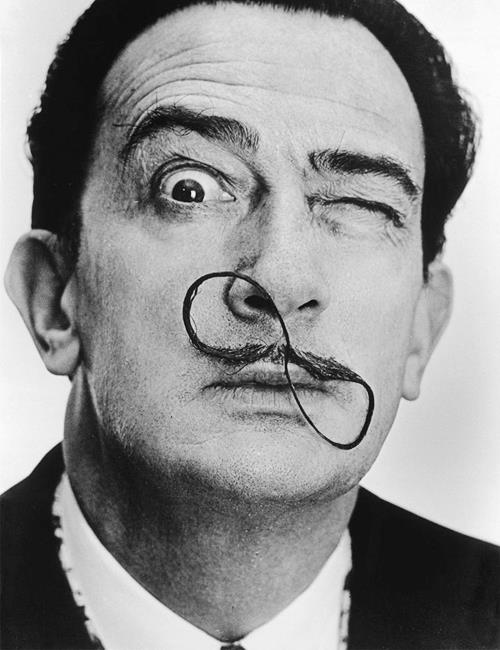
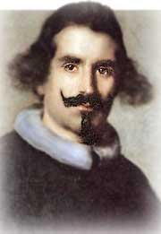
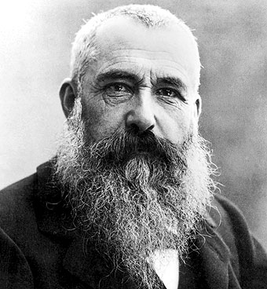
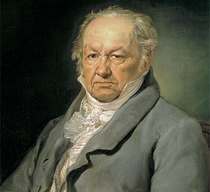
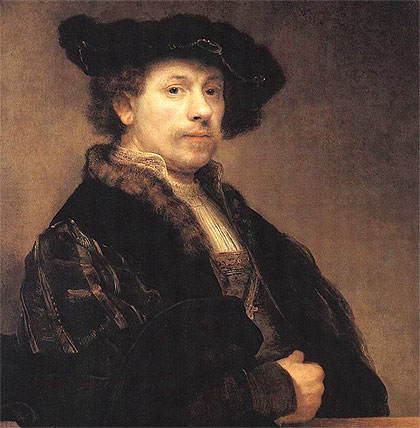
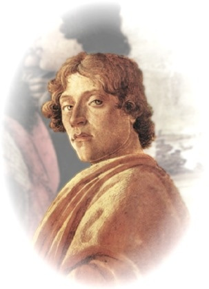
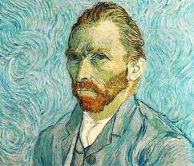

Salvador Dalí

Nacimiento: 11 de mayo de 1904, Figueras, España
Fallecimiento: 23 de enero de 1989, Figueras, España
Serie: Colección esculturas originales de Salvador Dalí, La Madonna de Port Lligat, The Seven Lively Arts
Períodos: Surrealismo, Cubismo, Arte moderno, Dadaísmo
Influenciado por: Pablo Picasso, Joan Miró, Diego Velázquez, MÁS
Cónyuge: Gala Éluard Dalí (m. 1934–1982)
Diego Velázquez

Nacimiento: 6 de junio de 1599, Sevilla, España
Fallecimiento: 6 de agosto de 1660, Madrid, España
Serie: El aguador de Sevilla
Hijos: Francisca de Silva Velázquez y Pacheco, Ignacia de Silva Velázquez y Pacheco, Antonio de Silva
Período: Barroco
Padres: João Rodrigues da Silva, Jerónima Velázquez
Cónyuge: Juana Pacheco (m. 1618–1660)
Pablo Picasso

Nacimiento: 25 de octubre de 1881, Málaga, España
Fallecimiento: 8 de abril de 1973, Mougins, Francia
Serie: Las Meninas, Músicos con máscaras, Mujeres de Argel, Sueño y mentira de Franco
Períodos: Cubismo, Arte moderno, Surrealismo, MÁS
Hijos: Paloma Picasso, Paulo Ruiz Picasso, Claude Ruiz-Picasso, Maya Widmaier-Picasso
Nietos: Marina Picasso, Jasmin Picasso, Olivier Widmaier Picasso, Diana Widmaier Picasso, Bernard Ruiz Picasso, Pablito Picasso
Claude Monet

Nacimiento: 14 de noviembre de 1840, Rue Laffitte, París, Francia
Fallecimiento: 5 de diciembre de 1926, Giverny, Francia
Serie: Nenúfares, Serie de la Catedral de Rouen, Almiares, MÁS
Períodos: Impresionismo, Arte moderno
Influenciado por: Édouard Manet, Pierre-Auguste Renoir, MÁS
Hijos: Michel Monet, Jean Monet
Paul Cézanne

Nacimiento: 19 de enero de 1839, Aix-en-Provence, Francia
Fallecimiento: 22 de octubre de 1906, Aix-en-Provence, Francia
Serie: Montaña Sainte-Victoire, Los jugadores de cartas, Bañistas
Períodos: Impresionismo, Posimpresionismo, Cubismo, Arte moderno
Influenciado por: Édouard Manet, Camille Pissarro, MÁS
Hijos: Paul Cézanne
Francisco de Goya

Nacimiento: 30 de marzo de 1746, Fuendetodos, España
Fallecimiento: 16 de abril de 1828, Burdeos, Francia
Serie: Pinturas negras, Los desastres de la guerra
Períodos: Romanticismo, Rococó
Hijos: Francisco de Paula Antonio Benito de Goya Bayeu, MÁS
Cónyuge: Josefa Bayeu (m. 1773–1812)
Leonardo da Vinci

Nacimiento: 30 de marzo de 1746, Fuendetodos, España
Fallecimiento: 16 de abril de 1828, Burdeos, Francia
Serie: Pinturas negras, Los desastres de la guerra
Períodos: Romanticismo, Rococó
Hijos: Francisco de Paula Antonio Benito de Goya Bayeu, MÁS
Cónyuge: Josefa Bayeu (m. 1773–1812)
Rembrandt

Nacimiento: 15 de julio de 1606, Leiden, Países Bajos
Fallecimiento: 4 de octubre de 1669, Ámsterdam, Países Bajos
Serie: Self-portraits by Rembrandt, Portrait of an Old Man and Portrait of an Old Woman
Períodos: Barroco, Pintura del Barroco, Siglo de Oro neerlandés
Hijos: Cornelia van Rijn, Rumbartus van Rijn, Titus van Rijn
Cónyuge: Saskia van Uylenburgh (m. 1634–1642)
Sandro Botticelli

Lugar de nacimiento: Florencia, Italia
Fallecimiento: 17 de mayo de 1510, Florencia, Italia
Serie: Life of Esther
Períodos: Renacimiento, Renacimiento italiano, Escuela florentina
Padres: Mariano di Vanni dei Filipepi, Smeralda Filipepi
Hermanos: Antonio di Vanni Filipepi, Giovanni di Vanni Filipepi, Simone di Mariano Filipepi
Vincent van Gogh

Nacimiento: 30 de marzo de 1853, Zundert, Países Bajos
Fallecimiento: 29 de julio de 1890, Auvers-sur-Oise, Francia
Serie: Los girasoles, El dormitorio en Arlés, MÁS
Períodos: Posimpresionismo, Puntillismo, Neoimpresionismo
Influenciado por: Claude Monet, Paul Cézanne, Rembrandt, MÁS
Influenciados: Pablo Picasso, Henri Matisse, Vasili Kandinski, MÁS